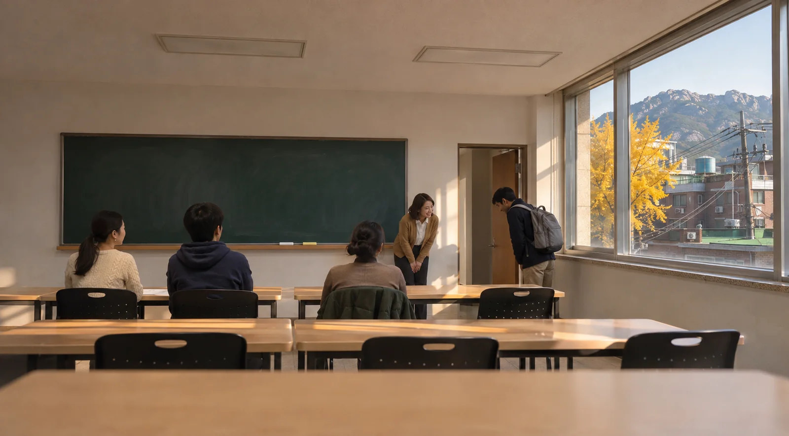
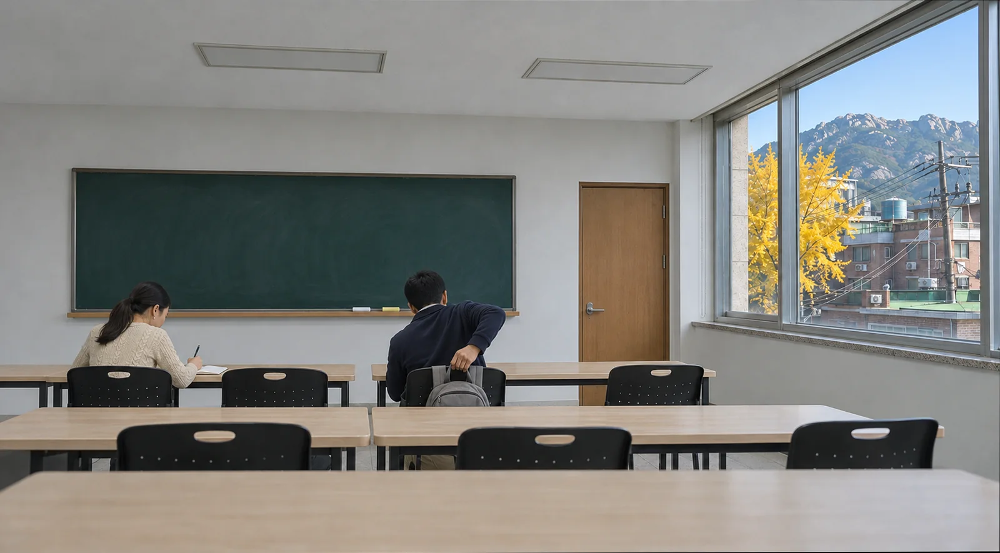
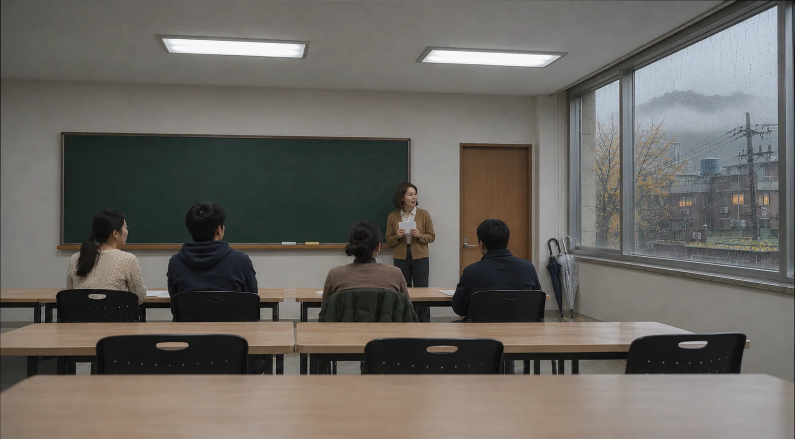
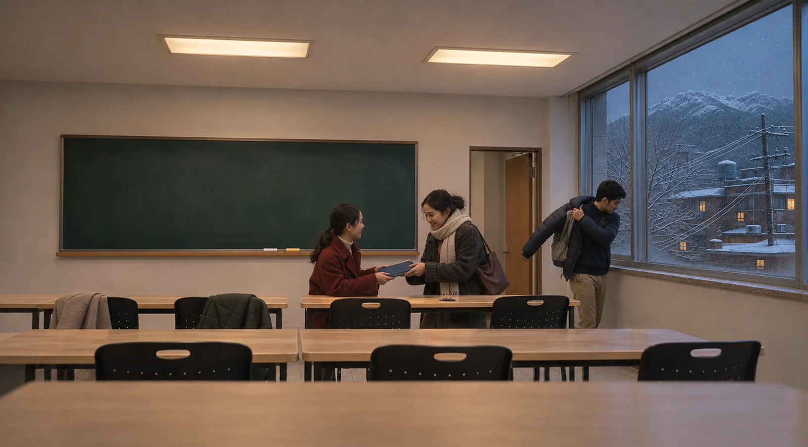
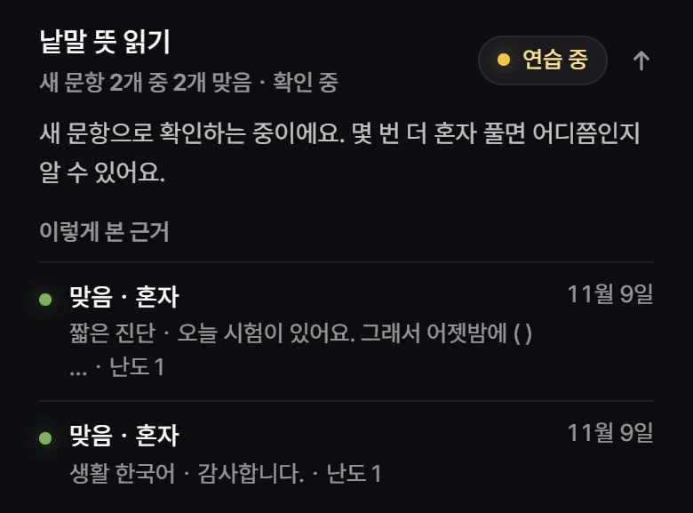
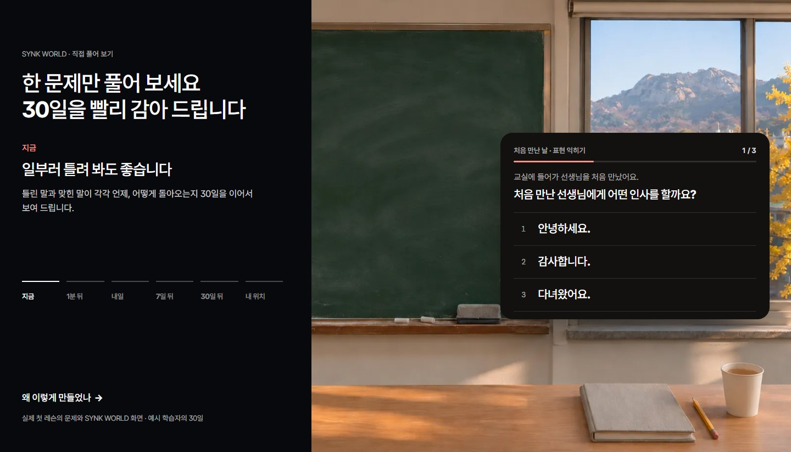
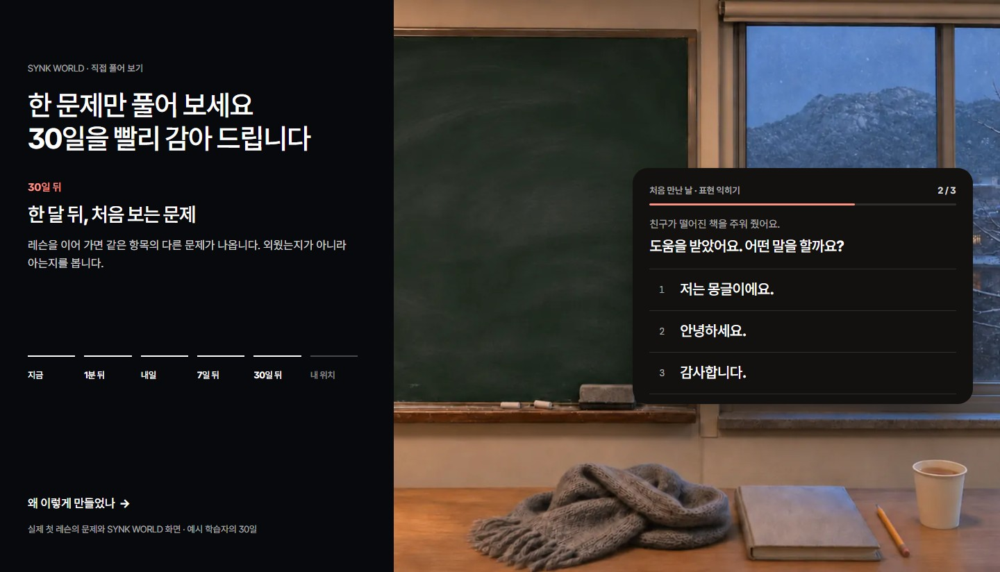
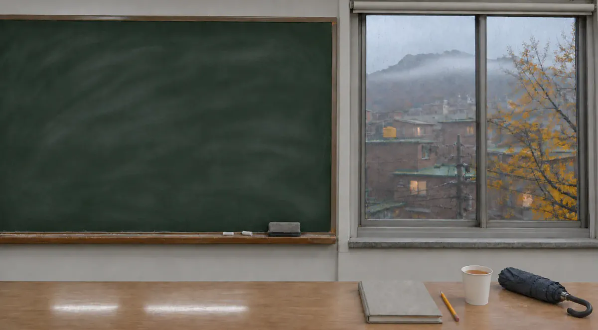

SYNK WORLD · 직접 풀어 보기
한 문제만 풀어 보세요 30일을 빨리 감아 드립니다


- 지금
- 1분 뒤
- 내일
- 7일 뒤
- 30일 뒤
- 내 위치
실제 첫 레슨의 문제와 SYNK WORLD 화면 · 예시 학습자의 30일
synk.im LAB · 「직접 풀어 보기」 구역 시안
글과 동작은 지금 공개본 그대로입니다. 짜임, 겉모습, 교실 사진, 시간 줄만 바꿨습니다. 판마다 문제를 직접 풀고 30일 뒤까지 넘겨 보실 수 있습니다.
추천 · B 큰 글 세 판 가운데 점수가 가장 높고, 휴대폰에서 가장 덜 깎였습니다. 어두운 카드와 좌우로 나뉜 틀을 가장 확실히 버린 판이기도 합니다. 고르시면 공개본 원고에 지으면서 맹검이 끝까지 짚은 두 가지를 함께 고칩니다. 하나는 사진 창을 키워 그날 장면이 읽히게 하는 것이고, 다른 하나는 7일 뒤 칸에 직접 풀어 볼 것을 하나 두는 것입니다.
왼쪽 검은 설명 칸과 오른쪽 교실 사진 위 문제 카드로 나뉜 짜임입니다. 2026년 11월 17일 synk.im/lab/에서 찍었습니다.


교실 사진이 구역 전체를 덮습니다. 문제는 어두운 카드 대신 종이 한 장 위에 놓이고, 물음은 학습지처럼 명조로 씁니다. 맞았는지와 다음으로 가는 단추도 같은 종이 안에 있습니다.




SYNK WORLD · 직접 풀어 보기

실제 첫 레슨의 문제와 SYNK WORLD 화면 · 예시 학습자의 30일
밝은 바탕에 장면 한 줄과 보기 세 낱말을 크게 씁니다. 교실 사진은 장면 줄 앞의 작은 창이 되어 그날 장면을 당겨 보여 주고, 날이 바뀔 때마다 그 창의 사진도 바뀝니다.
SYNK WORLD · 직접 풀어 보기
실제 첫 레슨의 문제와 SYNK WORLD 화면 · 예시 학습자의 30일
교실 사진이 구역 전체를 덮고, 카드 없이 물음과 보기가 영화 자막처럼 아래에 놓입니다. LAB 첫 화면의 상황극과 같은 말투입니다.
SYNK WORLD · 직접 풀어 보기
실제 첫 레슨의 문제와 SYNK WORLD 화면 · 예시 학습자의 30일
책상 위 소품(목도리 · 연필 · 글자 없는 책 · 컵)을 모두 뺐습니다. 대신 그날 문제의 장면을 사진 속 사람들이 합니다. 첫날은 선생님과 새로 온 학생이 인사하고, 30일 뒤에는 옆자리 친구가 떨어진 책을 주워 줍니다. 칠판은 늘 비어 있고, 사진 속에 글은 하나도 없습니다.

판마다 같은 네 장면을 출처를 가리고 물었습니다. 네 장면은 시작, 7일 뒤, 30일 뒤, 휴대폰 시작입니다. 이날 카본(Gemini)은 보낸 글이 사라지는 문제가 이어져, 공개본 한 번만 답을 받았습니다. 시안은 GPT 눈으로 쟀습니다. GPT 눈은 예전에 유호님이 고르셨던 판에 평균 6.5점, 기각하셨던 판에 4.9점을 준 눈입니다. 세 판 모두 7점에는 못 미쳤습니다.
| 판 | 시작 | 7일 뒤 | 30일 뒤 | 휴대폰 | 가장 크게 짚은 것 |
|---|---|---|---|---|---|
| 지금 공개본 · 카본 | 4 | 3 | 4 | 3 | 왼쪽 설명 칸과 오른쪽 카드로 나뉜 틀, 흔한 어두운 카드, 빈 칠판과 목도리 같은 AI 소품 |
| 지금 공개본 · GPT | 5 | 5 | 5 | 4 | 어두운 카드가 범용 학습 앱 틀로 보이고, 사진 위에 팝업을 붙인 것처럼 읽힌다 |
| A 종이 문제지 · GPT | 6 | 5 | 6 | 5 | 종이가 잘 정리된 학습지 양식에 머문다. 7일 뒤 칸은 안내문만 있어 체험할 것이 없다 |
| B 큰 글 · GPT | 6 | 5 | 6 | 6 | 사진 창이 작아 장면이 잘 안 읽히고, 보기 번호가 자판 표시처럼 보인다 |
| C 자막 · GPT | 6 | 5 | 6 | 4 | 물음과 보기가 같은 흰 글자라 누르는 것이 잘 안 보이고, 휴대폰 아래가 빈다 |